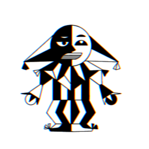

Индивидуальный проект "Мини-игры" от Fun | Sad | Games

Fun|Sad|Games
Правила игры Уровень сложности EasyИгрок управляет змейкой, которая ползает по плоскости, собирая мух и пакетики с кормом, избегая столкновения с собственным хвостом. На простой сложности змейка может проходить через границы локации, появляясь с противоположной стороны. Каждый раз, когда змея съедает кусок пищи, она становится длиннее, что постепенно усложняет игру
Уровень сложности HardИгрок управляет змейкой, которая ползает по плоскости, собирая мух и пакетики с кормом, избегая столкновения с собственным хвостом, цветами и красными границами поля. Если змейка столкнётся с цветком, счёт уменьшится в два раза (В случае с нечётным количеством очков вычитается на 0,5 меньше половины) Каждый раз, когда змея съедает кусок пищи, она становится длиннее, что постепенно усложняет игру
Задача игрыНабрать как можно больше очков.СоветЛучше играть клавишами WASD, а не стрелками, так как если играть стрелками, страница будут двигаться, что будет мешать игре.